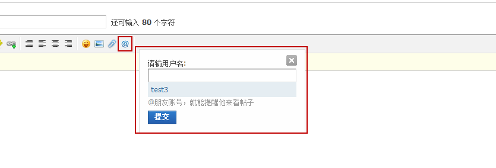

互动元素
@好友:会员发帖或者回帖时，想要让好友第一时间知道或参与到讨论中来，可选择@好友。被@的好友会收到一条提醒，可从提醒链接到该帖中.如下图：
转播:当看到自己感兴趣的帖子，同时也想让好友等看到，可以进行转播，点击转播，填写自己想说的话，提交即可完成转播，转播后帖子以及填写话将会以广播的形式发布，很快让好友及收听的人看到。
评价:用户可以对主题进行支持或反对的评价，用户评价主题将会增加主题的评价指数，当评价指数达到一定值时，主题列表页在主题标题后将会显示推荐图标，同时主题会在主题列表页“查看好评主题”中列出
收藏:用户可将感兴趣、有价值的帖子收藏，方便以后阅读。点击收藏即可把要收藏的内容添加到我的收藏中
订阅:在论坛的首页和进入版块的页面的右上角有一个rss订阅的小图标，鼠标点击之后将出现本站点的rss地址，可以将此rss地址放入到rss阅读器中进行订阅
分享:当看到精彩内容，想让好友等也看到，可以点击分享，将内容添加到我的分享，同时会发布一条分享内容的动态